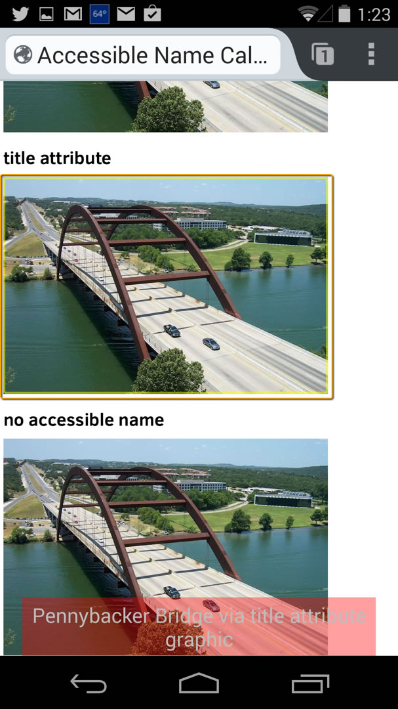

img要素のアクセシブルネームの計算
HTML to Platform Accessibility APIs Implementation Guide によると、WAI-ARIA属性はimg要素のアクセシブルネームの計算に含まれます。ただし、常に最も堅牢な属性を利用して実装することが最善です。
アクセシブルネームの計算順序は次の通りです。
aria-labelledby属性を利用する- それがなければ
aria-label属性値を参照する - それがなければ
alt属性値を参照する - それがなければ
title属性値を参照する - いずれも使用可能なテキストが得られない場合、この
img要素にアクセシブルネームはありません。
OS・UA・ATのサポート状況
- OS X 10.9.2 + Safari + VoiceOver
- iOS 7 + Mobile Safari + VoiceOver
- Windows 7 + Firefox 28 + NVDA 2013.1
- Windows 7 + Internet Explorer 8 + JAWS 14.0.1832
- Android 4.4.2 + Chrome 34.01847.114 + TalkBack 3.5.1
- Android 4.4.2 + Firefox 29.0.1 + TalkBack 3.5.1
Support Notes
iOSおよびOS X用のVoiceOverでは、オプションの「イメージをナビゲート」で「常にする」「説明付き」「しない」の３項目を選ぶことができます。「説明付き」とはアクセシブルネームを持つ画像のことです。
VoiceOverは、デフォルトだとアクセシブルネームを持たないimg要素の場合、画像のファイル名を読み上げます。NVDA及びJAWSは、画像のファイル名を読み上げることはありません。故に、アクセシブルネームを持たない画像がページに存在することをユーザは知ることができません。AndroidのChromeではアクセシブルネームのない画像は無視され、Firefoxでは「graphic」として読み込まれます。
aria-labelledby属性を利用した例

ペニーバッカー橋（aria-labelledby属性経由）
aria-label属性を利用した例
alt属性を利用した例
title属性を利用した例
アクセシブルネームを持たない例
Android版FirefoxとTalkBackを使用してスクリーンリータが出力した様子のスクリーンショット
